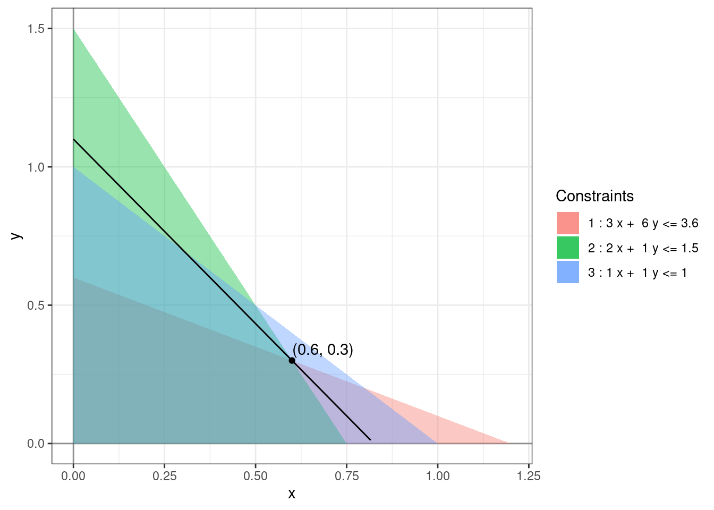

Chapter 1 Introduction
An optimization problem consists of maximizing or minimizing a real function over a set of input values from within an allowed set. \[\begin{align*} \mbox{optimize: } & f(x_1, \dots, x_n) \\ \mbox{subject to: } & (x_1, \dots, x_n) \in D. \end{align*}\] These kinds questions arise in all quantitative disciplines from computer science and engineering to operations research and economics.
Stated so generally, this question is too broad. To perform any meaningful analysis, we need to make several simplifying assumptions about \(f\) and \(D\). To begin with, we’ll assume that the function \(f\) is linear and the constraint set \(D\) is described using linear inequalities. The study of this kind of a problem is called Linear Programming. Despite the simplicity of the linear programming setup, or perhaps because of it, LP is one of the most commonly used models for optimization. Let us start with an example before getting into the precise definitions.
Example 1.1 A bond portfolio manager has $100,000 to allocate to two different bonds; one corporate and one government bond. The corporate bond has annual yield of 4%, a maturity of 3 years and an A rating from a rating agency that is translated into a numerical rating of 2 for computational purposes. In contrast, the government bond has annual yield of 3%, a maturity of 6 years and rating of Aaa with the corresponding numerical rating of 1 (lower numerical ratings correspond to higher quality bonds). The portfolio manager would like to allocate her funds so that the average rating for the portfolio is no worse than Aa (numerical equivalent 1.5) and average maturity of the portfolio is at most 3.6 years. Any amount not invested in the two bonds will be kept in a cash account that is assumed to earn no interest for simplicity and does not contribute to the average rating or maturity computations. How should the manager allocate her funds between these two bonds to achieve her objective of maximizing the annual yield for the first year from this investment? (Cornuéjols, Peña, and Tütüncü 2018)
| Corporate | Government | Constraints | |
|---|---|---|---|
| Yield | 4% | 3% | N/A |
| Maturity | 3 | 6 | 3.6 |
| Rating | A = 2 | Aaa = 1 | 1.5 |
| Allocations | ?? | ?? | 100,000 |
We can model the above problem as follows: \[\begin{equation} \begin{array}{rrrrrr} \mbox{maximize:} & 4x & + & 3y \\ \mbox{subject to:} & 3x & + & 6y & \le & 3.6 \\ & 2x & + & y & \le & 1.5 % & x & + & y & \le & 1 \\ % & x & , & y & \ge & 0, \end{array} \tag{1.1} \end{equation}\] where \(x\), \(y\) are the percentages of funds allocated to corporate and government bonds, respectively, and the objective function when multiplied by $100,000 gives us the net annual yield. This is an example of a linear program. Recall that we cannot subtract inequalities the same way as we subtract equalities (Exercise 1.2). So, to get started, let us assume that both the inequalities are in fact equalities. We can solve the resulting system, \[\begin{equation*} \begin{array}{rrrrrl} & 3x & + & 6y & = & 3.6 \\ & 2x & + & y & = & 1.5, \end{array} \end{equation*}\] to obtain \(x = 0.6\) and \(y = 0.3\). For this solution \(x + y = 0.9\) which is less that 1, meaning that we’re not investing all the available funds. This seems less than ideal! Surely, we must invest all the funds to get maximum yield?
To complicate things further, notice that the linear program (1.1) is incomplete and the complete linear program that models the problem is as follows: \[\begin{equation} \begin{array}{rrrrrl} \mbox{maximize:} & 4x & + & 3y \\ \mbox{subject to:} & 3x & + & 6y & \le & 3.6 \\ & 2x & + & y & \le & 1.5 \\ & x & + & y & \le & 1 \\ & x & & & \ge & 0 \\ & & & y & \ge & 0. \end{array} \tag{1.2} \end{equation}\] The solution \((x, y) = (0.6, 0.3)\) is obtained by changing the first two inequalities to equalities. We could have switched some other set of inequalities to equalities and solved for a different solution. We would then need to compare the yields for each of these solutions and find the one that maximizes it.
However, now there is an additional issue that needs to be dealt with carefully. Solving these modified equations might produce a solution that does not satisfy the original constraints. For example, solving the system of equations \[\begin{equation*} \begin{array}{rrrrrl} & 2x & + & y & = & 1.5 \\ & x & & & = & 0 \end{array} \end{equation*}\] gives us \((x, y) = (0, 1.5)\) which breaks the constraints \(3x + 6y \le 3.6\) and \(x + y \le 1\). So, not only do we need to compare the yields at these solutions but we also need to make sure that they satisfy all the original constraints. As you can imagine, this naive approach becomes unwieldy for large linear programs. It is not even clear that changing inequalities to equalities is the right approach to solving such a problem.1 For this particular problem, we can use a graphing calculator to solve the problem as there are only two variables. The following figure shows the region described by the various constraints in the first quadrant (\(x \ge 0, y \ge 0\)).

The points within the quadrilateral formed by the overlap of all three constraint regions satisfy all the constraints. The level sets of the objective function are straight lines of the form \(4x + 3y = c\). We can see that the largest value of \(c\) for which these level sets intersect the feasible region is \(c = 3.3\%\) for \((x, y) = (0.6, 0.3)\). Our original solution was indeed correct! And it is not possible to invest more money and increase the yield!!
Exercise 1.1 What are some possible ways to relax the constraints in the above problem so that all the money can be invested? What is the improved annual yield?
Exercise 1.2 The following exercises review some basic facts about inequalities:
- Find constants \(a, b, c, d\) such that \(a < b\), \(c < d\), \(a - c < b - d\), and \(ac < bd\).
- Find constants \(a, b, c, d\) such that \(a < b\), \(c < d\), \(a - c < b - d\), and \(ac > bd\).
- Find constants \(a, b, c, d\) such that \(a < b\), \(c < d\), \(a - c > b - d\), and \(ac < bd\).
- Find constants \(a, b, c, d\) such that \(a < b\), \(c < d\), \(a - c > b - d\), and \(ac > bd\).
- Prove that if \(a, b, c, d\) are constants such that \(a < b\) and \(c < d\), then \(a + c < b + d\). Why does this proof fail when we try to subtract the two inequalities instead of adding them?
There are two main families of efficient algorithms for solving linear programs: simplex method(s) (Chapter 3) and interior point methods (Chapter 12). The simplex method is a combinatorial algorithm that essentially performs the above analysis systematically. Interior point methods modify gradient descent algorithms to search for an optimal solution within the feasible region. We’ll analyze the simplex method in great detail and only briefly introduce a basic interior point method.